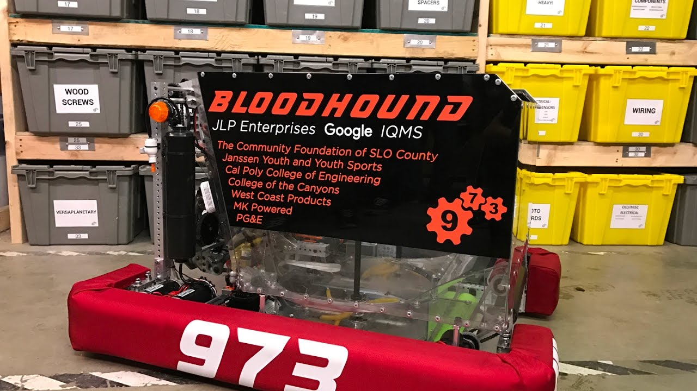

I am a third year undergraduate student majoring in Applied Analytics here at Illinois Institute of Technology. Amidst learning various programming languages like Jave and Python, and webpage development tools, I am also with Illinois Tech Esports (ITE) organization.
I also was a part of FIRST robotics in highschool and built/machined parts for FRC Team 973, who won I won the world championship in 2017 with.
I am seeking to apply my computer science and economics knowledge as a junior financial or data analyst.
My email: cmurphy11@hawk.iit.edu
Or find me on LinkedIn!.